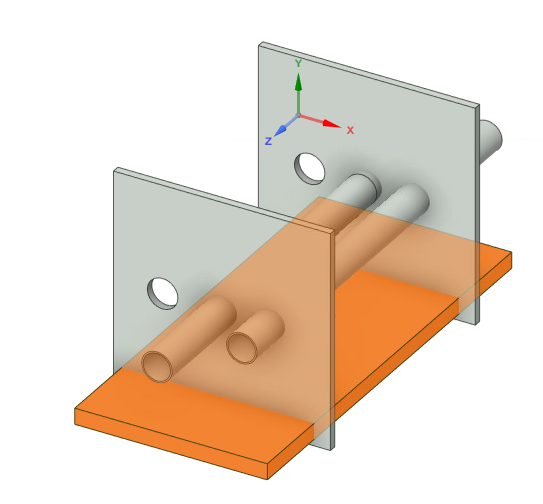
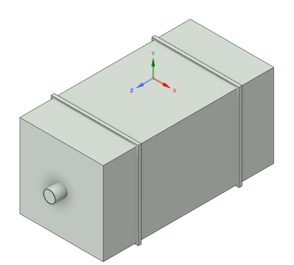
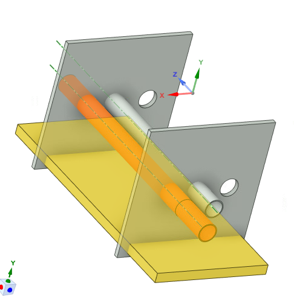
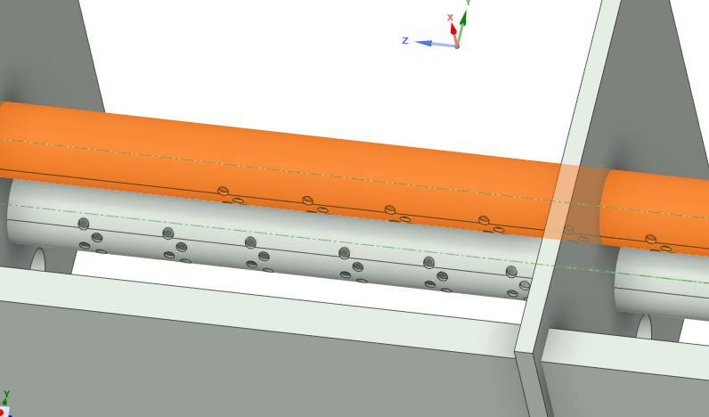
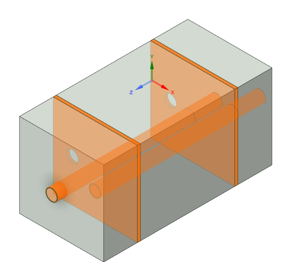
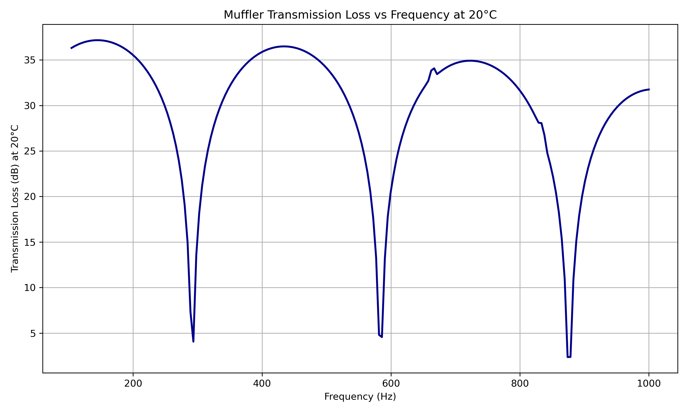
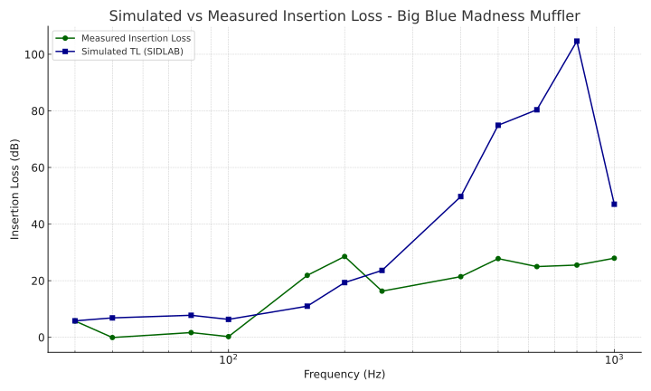

Multichamber Muffler System
Michael Raba, MSc Candidate at University of Kentucky
Created: 2025-05-28 Wed 04:40
Multicomponent Muffler Internal Geometry
Dimensions
Schematic Variants for Muffler Subcomponents

Part 1 — Chamber and Baffle

Part 2 — Fluid domain

Part 3 — Fiberglass Absorbant (gold)
Part 4 — Showing perforates (aimed at fiberglass)

Part 5 — Final Assembly View

Ansys Simulation
Simulated Transmission Loss (0–1000 Hz) by approximating muffler walls as fluid at 20 deg C

Figure: Transmission Loss curve of the muffler between 5 Hz and 1000 Hz at 20°C.
Simlab Simulation
Simulated Transmission Loss (0–1000 Hz) Simlab model

Sidlab and Ansys File Download Center
SIDLAB Model
- File:
Mark3Sid.zip - Created with: SIDLAB 5.1
- ⬇ Download SIDLAB File
ANSYS Simulation
- File:
Mark-I-MDF-clearned-data.wbpz - Created with: ANSYS 2023 R2
- ⬇ Download ANSYS File
Sidlab Components
Simulated vs Measured Insertion Loss
Measured vs Simulated TL

Insertion Loss Explanation
Insertion Loss (IL) quantifies how much sound is attenuated when a muffler is added to the system.
General formula:
\[ \text{IL} = 10 \log_{10} \left( \frac{P_{\text{baseline}}}{P_{\text{muffler}}} \right) \]
Because our data is already in decibels (dB), this simplifies to:
\[ \text{IL} = \text{Power}_{\text{baseline (dB)}} - \text{Power}_{\text{muffler (dB)}} \]
References
Cited Works
- Munjal ML. Acoustics of Ducts and Mufflers. 2nd ed. Wiley; 2014. ISBN: 9781118443125. https://doi.org/10.1002/9781118443125
- Dokumacı E. Duct Acoustics: Fundamentals and Applications to Mufflers and Silencers. Cambridge University Press; 2021. ISBN: 9781108840750. https://doi.org/10.1017/9781108840750
Note: These references are foundational texts in muffler and duct acoustics and were consulted for system modeling, schematic development, and transmission loss analysis.